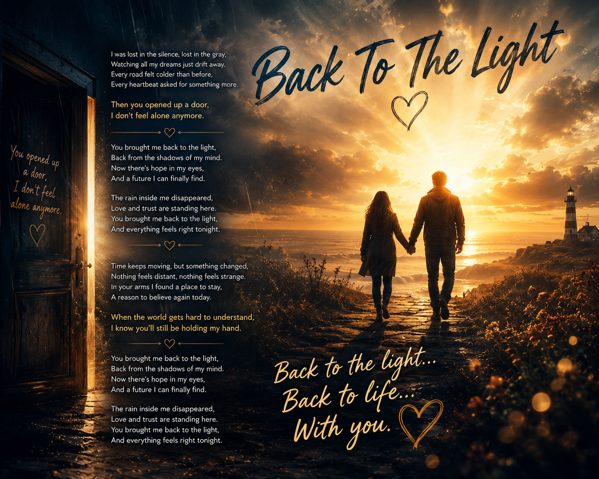
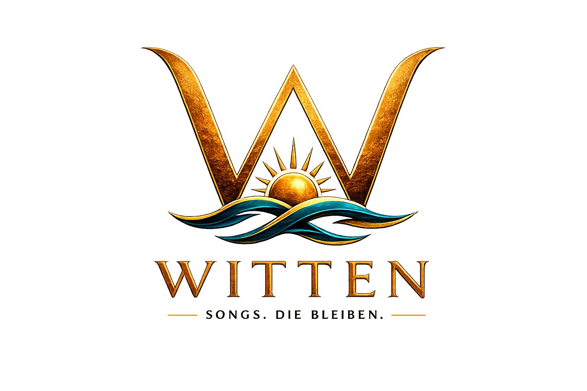
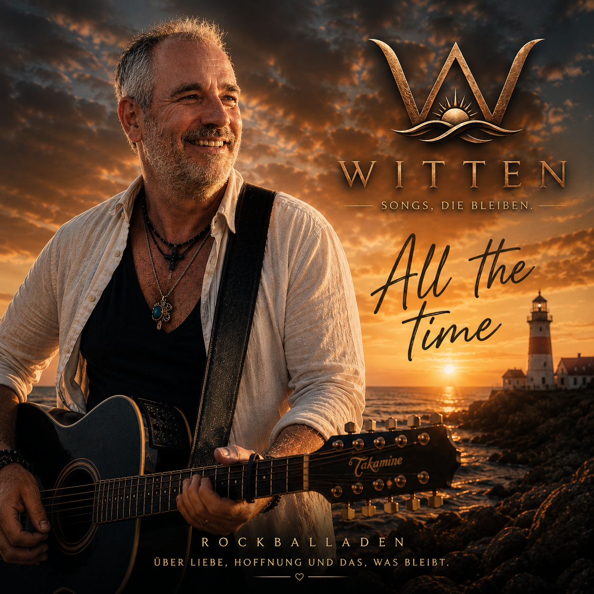
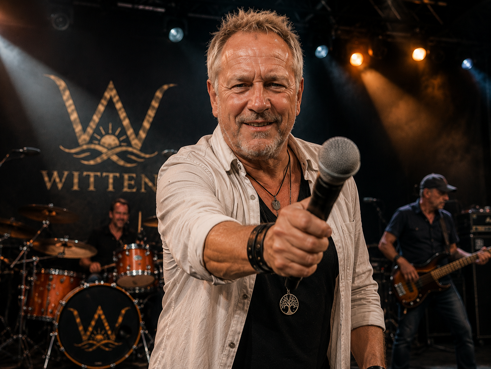
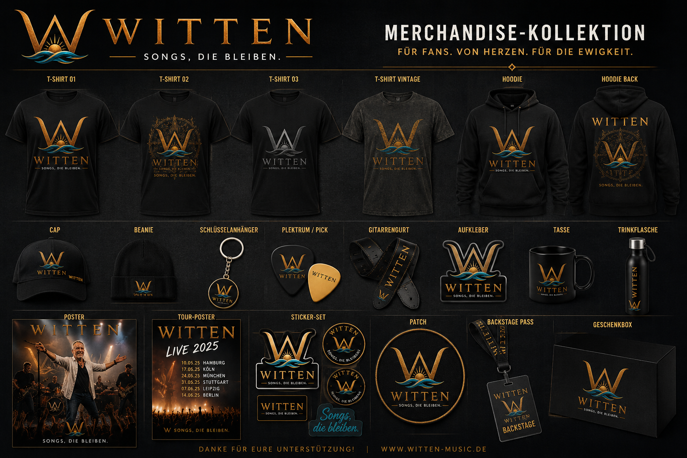
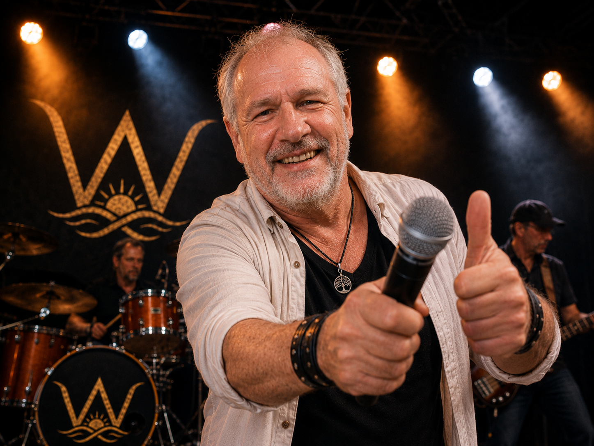
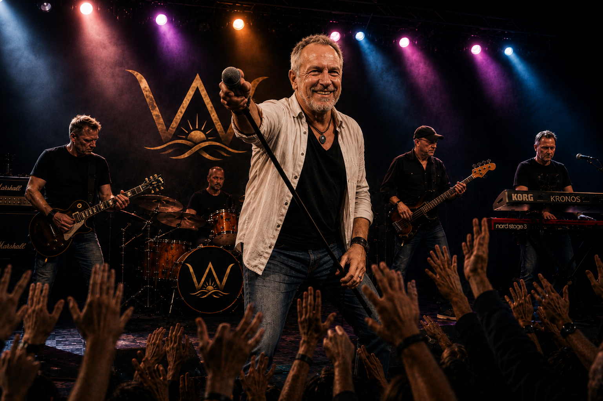

Rockballade
Back To The Light
Vom Schatten zurück ins Licht – eine Ballade über Vertrauen, Nähe und Neubeginn.
Link einfügen →
WITTENCinematic Melodic Rock
Rockballaden voller Herz, Licht und Leben. Große Gefühle, ehrliche Geschichten und eine Bühne, die nach Erinnerung klingt.
Die Geschichte
Nicht jeder Song beginnt mit einer Melodie. Manche beginnen mit einem Blick, einer Erinnerung, einem Menschen – oder mit einem Gefühl, das nicht mehr leise bleibt.
WITTEN steht für Rockballaden, die nicht nur klingen, sondern etwas erzählen.
Musik
Eine Auswahl der Songs, die die Welt von WITTEN definieren: Licht, Liebe, Sehnsucht, Hoffnung und das, was bleibt.

Vom Schatten zurück ins Licht – eine Ballade über Vertrauen, Nähe und Neubeginn.
Link einfügen →

Videos
Liveclips, Lyricvideos, Bühnenmomente und Story-Videos im WITTEN-Look.
Live
WITTEN live bedeutet Nähe zum Publikum, große Refrains und echte Bühnenenergie.
WITTEN buchenMerchandise
Schwarz, Gold und Türkis. Hochwertig, klar und wiedererkennbar.

Galerie


Über WITTEN
WITTEN verbindet melodischen Rock mit persönlichen Geschichten. Die Songs handeln von Liebe, Sehnsucht, Hoffnung, Neubeginn und Momenten, die man nicht vergisst.
Der visuelle Stil bleibt klar: Bühne, Licht, Meer, Gold, Türkis – und ein Logo, das für Songs steht, die bleiben.
Presse & EPK
Hier können später Pressefotos, Logo-Dateien, Kurzbiografie und technische Informationen bereitgestellt werden.
Kontakt & Booking
Für Booking, Presse, Kooperationen oder Musikfragen:
frankwittenhagen@hotmail.com